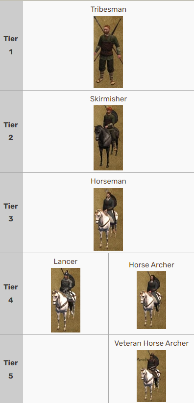

"Mount & Blade: Warband" - це епічна середньовічна екшн-RPG, що розгортається в уявному світі Калрадії. Гравці відправляються в неймовірну подорож через середньовічний світ, де вони можуть стати великими воїнами, мудрими правителями або впливовими купцями. Гра пропонує величезний відкритий світ, де гравці можуть вільно подорожувати, взаємодіяти з різними персонажами та брати участь у захоплюючих битвах. Гра вражає своїм величезним асортиментом можливостей і гнучкістю геймплею. Гравці можуть обирати свій власний шлях у світі Калрадії: вони можуть стати могутнім воїном, що бореться за славу та владу на полі бою, розумним дипломатом, що прагне досягти мирного злагодження між фракціями, або відомим купцем, що вигідно торгує великі торгові маршрути. Від вибору персонажа до кінцевого результату, гравці мають повний контроль над своєю долею в цьому захоплюючому світі.
Однією з найважливіших нововведень у грі "Mount & Blade: Warband" була можливість гравця стати монархом, що великою мірою змінило геймплей та стратегічні аспекти гри. Ось деякі з інших нововведень:
Мультиплеєр: Додавання мультиплеєра було значним оновленням, що дозволило гравцям змагатися один з одним у різних режимах, таких як битви на арені, війни між фракціями тощо.
Модифікації: "Mount & Blade: Warband" також відкрив двері для безлічі модифікацій, які розширили можливості гри та додали нові елементи, персонажів, зброю, карту тощо.
Політичні можливості: Гравці тепер мали можливість укладати союзи, утримувати та адмініструвати свої володіння, вибирати своїх васалів та розпоряджатися їхніми військами.
Деталізованіша карта: Нова карта відображала більш деталізовану та розширену Кальрадію, що дозволило гравцям досліджувати більші території та зустрічати нові фракції.
Розвиток персонажа: Збільшення рівнів навичок, нові варіанти розвитку персонажа та більше можливостей для персоналізації вигляду та вибору екіпірування.
Також для "Mount & Blade: Warband" було випущено два офіційних DLC:
Napoleonic Wars - яке переносить дію в епоху наполеонівських війн. Гравці можуть взяти участь у великих мультиплеєрних битвах, відтворюючи знамениті сутички та битви цього періоду. Гра пропонує різноманітні режими гри, включаючи лінійні бої, облоги фортець, а також можливість відтворення історичних подій та кампаній. Крім того, "Napoleonic Wars" відома своєю деталізованою реконструкцією епохи, включаючи зброю, уніформу та історичні військові формування. Ви можете дізнатись більше, перейшовши по лінку : Mount & Blade: Warband - Наполеонівські війни
Viking Conquest - це офіційне доповнення до гри "Mount & Blade: Warband", яке переносять гравців у світ вікінгів і англосаксонських королівств. Гравцям належить вибрати свій шлях в цьому вирішальному періоді європейської історії, роблячи вибори щодо військових кампаній, торгівлі, дипломатії та влади. Гра пропонує нові функції, такі як управління військами на морі, бойові змагання з дружинниками та розширені можливості взаємодії з іншими персонажами. Крім того, "Viking Conquest" має змістовний сюжет, який пропонує гравцям різноманітні завдання та пригоди в епоху великих вікінгів. Ви можете дізнатись більше, перейшовши по лінку : Mount & Blade: Warband - Завоювання вікінгів
Основною особливістю гри є її унікальна бойова система, яка дозволяє гравцям керувати своїм персонажем у битвах в реальному часі. Гравці можуть вибирати різні стилі бою, від меча і щита до величезного дворучного меча або влучних стрілецьких навичок. Крім того, гравці можуть керувати великими арміями та вступати в різні фракції, що борються за владу і вплив в Калрадії.
У грі представлено різноманіття фракцій, кожна з яких має свої власні характеристики, традиції і військові стратегії. Гравці можуть обрати, до якої фракції приєднатися або створити власну, прагнучи здобути владу та вплив в світі Калрадії. Крім того, гра пропонує глибоку систему взаємодії з іншими персонажами та фракціями, дозволяючи гравцям вести складні політичні і дипломатичні маніпуляції для досягнення своїх цілей.
"Mount & Blade: Warband" також вражає своїм глибоким системою розвитку персонажа і управління власною державою. Гравці можуть підвищувати навички свого персонажа, набираючи досвід у битвах та виконуючи завдання, а також будувати своє королівство, визначаючи політику, розвиваючи економіку та ведучи зовнішню політику з іншими фракціями.
"Mount & Blade: Warband" також вражає своєю глибиною і громадянськими аспектами. Гравці можуть будувати своє власне королівство, вибирати закони та політику, залучати союзників та управляти своєю власною армією. Крім того, гра пропонує різноманітні квести та завдання, які допомагають гравцям розвивати свої навички та здобувати ресурси для підтримки їхнього королівства або підкорення інших.
Завдяки своїй величезній свободі дій, неперевершеній глибині геймплею та безмежним можливостям, "Mount & Blade: Warband" залишається однією з найуспішніших та незабутніх середньовічних екшн-RPG у всій історії відеоігор.
Створення гри
"Mount & Blade: Warband" - це результат творчої праці і великих зусиль невеликої команди розробників з Туреччини та України, очолюваної Талгатом Шаданом та Олексієм Янковським відповідно. Розробка гри почалася після успіху оригінальної "Mount & Blade", коли команда вирішила створити ще більш амбіційний та вражаючий проект, який відповідав бажанням та очікуванням геймерів.
Початок розробки "Mount & Blade: Warband" припадає на кінець 2000-х років, коли розробники активно працювали над розширенням функціоналу та покращенням геймплею. Вони враховували отримані відгуки від гравців щодо оригінальної гри та ставили перед собою амбітну мету - створити ще більш глибокий, захоплюючий та реалістичний світ, де гравці могли б відчути себе справжніми лицарями середньовічного світу.
Одним з найбільших викликів під час розробки "Warband" була реалізація мультиплеєра, що дозволило гравцям з усього світу боротися один проти одного або об'єднатися в союзи та війська для завоювання нових територій та відстоювання своїх кордонів. Розробники витратили багато часу на оптимізацію мережевого геймплею, забезпечуючи стабільну та ефективну роботу серверів та мінімізуючи затримки та перерви під час гри.
Ще одним важливим аспектом створення "Warband" було розширення гри за рахунок додавання нових функцій, персонажів та механік. Розробники працювали над удосконаленням бойової системи, додаванням нових типів зброї та броні, а також розвитком системи управління та взаємодії з іншими персонажами. Вони також розширили карту гри, додавши нові території, міста та фракції, що зробило світ "Warband" ще більш різноманітним та захоплюючим для дослідження.
Завдяки наполегливості, таланту та великим зусиллям команди розробників, "Mount & Blade: Warband" став справжнім шедевром у світі відеоігор, отримавши визнання гравців та критиків за свою глибоку геймплейну механіку, захоплюючий світ та безліч можливостей для творчості та пригод.
Сюжет
У "Mount & Blade: Warband" гравці відправляються в епічне путешествие в світ Калрадії, де вони відчують на собі всю складність середньовічних часів. Сюжет гри розгортається в період турбулентних подій, коли королівства борються за владу, а лицарі відстоюють свою честь і славу на полі бою.
Гравець розпочинає свою подорож у ролі безпосереднього лицаря, який має свої власні амбіції і мети. Він вільний обирати свій власний шлях у цьому світі, будучи вільним кочівником, відважним лицарем або хитрим політиком. Гравцю належить приймати стратегічні рішення щодо вибору альянсів, управління власними ресурсами та військами, а також брати участь у складних дипломатичних переговорах.
У своєму шляху гравець зустрічає різноманітних персонажів, кожен з яких має свої власні мотиви та цілі. Він вступає в битви з різними фракціями, бере участь у великих політичних інтригах та працює над тим, щоб підняти свій статус в цьому світі. Гравцеві належить брати участь у війнах, відстоювати замки та відвоювувати території, щоб здобути славу та визнання серед своїх супротивників.
Але головною метою гравця є підняття на престол і стати правителем усього Калрадії. Чи зможе гравець завоювати відданість і повагу своїх підданих? Чи зможе він зберегти свою владу в часи війни та змагань? Відповіді на ці питання залежать від вмінь і рішень гравця у світі "Mount & Blade: Warband".
У першій частині "Mount & Blade" гравець виступає у ролі мандрівника, який шукає славу, багатство та владу у світі Калрадії. Головним аспектом сюжету є освоєння відкритого світу, боротьба з різними фракціями та участь у політичних інтригах.
У "Mount & Blade: Warband" сюжетна лінія розгортається в середовищі політичних боротьб, великих війн та інтриг. Гравець може обирати більш активну участь у політичному житті Калрадії, брати участь у фракційних конфліктах та навіть претендувати на корону.
Отже, "Mount & Blade: Warband" розширює сюжетні можливості першої гри, дозволяючи гравцеві більш активно впливати на події у світі гри та взаємодіяти з різними персонажами та фракціями.
Фракції та конфлікти в світі "Mount & Blade"
Світ "Mount & Blade" наповнений різноманітними фракціями, кожна з яких має свої власні цілі, інтереси та конфлікти. У цьому середньовічному світі, що переповнений війнами та інтригами, відбуваються численні зіткнення між різними політичними силами, які борються за владу, території та ресурси.
Фракції у "Mount & Blade" варіюються від могутніх королівств з великими арміями до скромних племен, які протистоять великим політичним силам. Кожна з них має свою унікальну історію, культуру, традиції та економіку, що визначають її роль у глобальних подіях.
Фракції часто знаходяться в конфліктах одна з одною через територіальні питання, економічні інтереси або політичні розбіжності. У цьому світі війни та дипломатії грають вирішальну роль, і від вмілого керівництва фракцією залежить її майбутнє.
Кожна фракція має свого вождя, чи то короля, султана, князя чи вождя племені, який визначає її курс і веде її до перемоги або поразки. Історія цих лідерів часто вплітається з історією фракції та визначає подальші події у грі.
Усі ці фракції створюють живий та реалістичний світ "Mount & Blade", де гравець може відчути себе учасником середньовічних інтриг та війн, взаємодіючи з різноманітними культурами та переживаючи складні ситуації, що виникають у світі, наповненому конфліктами та можливостями.
Королівство Свадія
Королівство Свадія розташоване на південному заході, і славиться своїми висококваліфікованими лицарями та величними турнірами. Проте внутрішні конфлікти та боротьба за владу між аристократами руйнують традиційні цінності королівства.
Король Харлаус - відомий своєю справедливістю та мудрістю, він керує Свадією вже протягом десятків років, забезпечуючи стабільність та процвітання свого народу.
Королівство Свадия:
Історія:
Свадія - одна з найстаріших і наймогутніших фракцій у світі Кальрадії. Вони славляться своєю висококультурною історією та благополучним розвитком.
Ця фракція виникла в результаті об'єднання різних володінь та князівств під владою короля Харлауса. Він зумів об'єднати землі під однією владою та створити стабільну державу.
Форма влади:
Свадія - монархія з королем на чолі. Король Харлаус - довгожительний та мудрий правитель, який забезпечує мир та порядок у своїй державі.
Влада короля Харлауса базується на принципах справедливості та рівності перед законом.
Територія:
Свадія розташована в центральній частині Калрадії, її територія охоплює різноманітні ліси, річки та землі для сільського господарства.
Основними містами Свадії є Praven, Uxkhal, Reyvadin та Dhirim, які відіграють ключову роль у торгівлі та політичному житті фракції.
Культура та армія:
Свадійці відомі своєю високою культурою, розкошними балами та турнірами, які привертають лицарів та аристократів з усієї Калрадії.
Армія Свадії складається з відомих та досвідчених лицарів, важкої кінноти, що відома своєю відвагою та майстерністю у бою.
Конфлікти:
Незважаючи на благополучний стан, Свадія постійно стикається з внутрішніми проблемами та конфліктами між аристократами, які прагнуть до більшої влади та впливу в королівстві.
Також, фракція не уникла зовнішніх загроз, зокрема з боку Кергітів та Родоків, які постійно ведуть війни за територіальні надбання та вплив у регіоні.
Більш детальний огляд на фракцію Свадія :
Королівство Родок
Родоки є однією з найвпливовіших фракцій у світі "Mount & Blade", відомих своєю вправністю в ремеслах та торгівлі. Їхня економіка процвітає завдяки розумним торговим угодам та дипломатичним відносинам з іншими фракціями, що дозволяє їм зберігати високий рівень благополуччя та стабільності.
Король Гравет - є визнаним лідером та символом єдності для свого народу. Він відомий своєю мудрістю та справедливістю, завжди ставлячи інтереси своїх підданих на перше місце. Король Гравет є важливим фігурою не лише в політичному, а й у культурному та військовому житті Родоків. Його рішучість та відданість своїм ідеалам роблять його справжнім лідером свого народу.
Королівство Родок:
Історія:
Королівство Родок є однією з найбільш престижних та впливових держав у світі Кальрадії. Її історія багата на війни, перемоги та політичні випробування. З часом Родоки стали символом майстерності та ремісництва, що принесло їм шану та повагу у всьому світі.
Форма влади:
Родоки керуються монархічною системою, де король або королева є головним правителем. В країні, це місце збору всієї влади, знаходиться в столиці і керується з неї.
Влада короля Гравета базується на принципах справедливості та рівності перед законом.
Територія:
Королівство Родок займає значну частину північно-західної території світу Калрадії, Його землі охоплюють різні ландшафти, від плодючих долин до високогір'їв, що дає можливість фракції отримувати різноманітні ресурси.
Культура та армія:
Родоки славляться своєю невимушеною культурою та прагматичним підходом до життя. Вони відзначаються багатством мистецтва та ремесел, що відображається у їхній архітектурі та виробах ремісників.
Армія Родоків складається з досвідчених стрільців з луками, які володіють великою майстерністю в пострілах з дальніх відстаней. Вони доповнюються військами важкої піхоти, здатної пристосовуватися до різних умов бою та терену.
Конфлікти:
Незважаючи на благополучний стан, Свадія постійно стикається з внутрішніми проблемами та конфліктами між аристократами, які прагнуть до більшої влади та впливу в королівстві.
Також, фракція не уникла зовнішніх загроз, зокрема з боку Кергітів та Родоків, які постійно ведуть війни за територіальні надбання та вплив у регіоні.
Більш детальний огляд на фракцію Родок :
Королівство Вегір
Родоки є однією з найвпливовіших фракцій у світі "Mount & Blade", відомих своєю вправністю в ремеслах та торгівлі. Їхня економіка процвітає завдяки розумним торговим угодам та дипломатичним відносинам з іншими фракціями, що дозволяє їм зберігати високий рівень благополуччя та стабільності.
Король Гравет - є визнаним лідером та символом єдності для свого народу. Він відомий своєю мудрістю та справедливістю, завжди ставлячи інтереси своїх підданих на перше місце. Король Гравет є важливим фігурою не лише в політичному, а й у культурному та військовому житті Родоків. Його рішучість та відданість своїм ідеалам роблять його справжнім лідером свого народу.
Королівство Вегір:
Історія:
Королівство Вегір є древнім і могутнім королівством, яке має багату історію завоювань та розширення свого впливу. Його коріння сягають давніх часів, коли перші вегірські воїни почали завойовувати нові землі і підкорювати інших народів.
Форма влади:
Королівство Вегір є феодальною монархією, де влада концентрується в руках короля. Вегірський король, відомий як Яроглек, є вищим правителем і володарем королівства. Він приймає стратегічні та політичні рішення, керує армією та державним апаратом, і має владу призначати і відсторонювати військових та цивільних чиновників. Король також здійснює контроль над судовою системою і владою над територією, що входить до складу королівства. Вегірська монархія має свою власну систему феодальних лордів і васалів, які служать королеві і допомагають йому управляти країною в обмін на землі, титули та захист.
Територія:
Королівство Вегір розташоване в центральній частині світу "Кальрадія". Територія королівства охоплює різноманітні ландшафти, включаючи розсипані ліси, просторі степи та гористі хребти, які створюють складну топографію країни.
Культура та армія:
Вегір відомий своєю воєнною культурою та могутньою армією. Воїни Вегіру - відважні та досвідчені вояки, які володіють високими навичками у бою. Вегір також славиться своїми відомими боємісткими лучниками та стрільцями.
Конфлікти:
Королівство Вегір часто знаходиться у конфліктах з іншими фракціями, такими як Родоки та Свадія, через територіальні претензії та взаємні амбіції. Крім того, Вегір часто стикається з нападами варварів та внутрішніми проблемами, що створюють небезпеку для стабільності королівства.
Більш детальний огляд на фракцію Вегір :
Королівство Норд
Королівство Нордів - велика держава на північному заході світу Кальрадії. Ця фракція відома своєю відданістю воєнним традиціям та суворою культурою. Її лідер, Король Рагнар, володіє великим впливом серед своїх підданих і завжди готовий захищати своє королівство від зовнішніх загроз.
Король Рагнар -є впливовим лідером серед Нордів. Він відомий своєю сміливістю та мудрістю, а також як великий воїн, який завжди готовий очолити своїх людей у бою.
Королівство Норд:
Історія:
Королівство Нордів - це велика держава на північному заході світу Кальрадії. Відомі своєю відданістю воєнним традиціям та суворою культурою, Норди завжди були відомі як сильні воїни і стійкі оборонці своїх земель.
Форма влади:
Королівство Нордів - монархічна монархія. Король Нордів, відомий як Рагнар, керує державою зі свого палацу в місті Сарданс.
Територія:
Королівство Нордів розташоване на північному заході Кальрадії.включає в себе обширні ліси, суворі гори та льодовики. Ця земля відома своєю суровою природою та високими гірськими пасмами, які створюють важкі умови для життя, але водночас надають перевагу в обороні. Їх територія включає в себе суворі гори, сніжні долини та обширні ліси, що допомагають їм триматися від окупантів.
Культура та армія:
Норди відомі своєю воєнною культурою та відвагою в бою. Вони виховують своїх воїнів з дитинства, навчаючи їх робити міцні руки та сильні серця. Армія Нордів складається з могутніх воїнів, які володіють важкими зброями та бронею, і їх відома своєю незламною дисципліною та здатністю протистояти будь-яким ворогам.
Конфлікти:
Норди завжди були в оживленому конфлікті з іншими фракціями, особливо з Свадією та Вегірами, через їх територіальні претензії та культурні відмінності.
Більш детальний огляд на фракцію Норд :
Королівство Кхергіт
Кхергити - це воїнський народ, який проживає в степах на південь від Кальрадії. Вони відомі своєю вправністю в їзді на конях та володіють маневреними кочовими арміями, які можуть швидко переміщатися та наносити удари з несподіваних напрямків. Своїм швидким та непередбачуваним стилем бою вони завдають немало турбот іншим фракціям, особливо у відкритих степових рівнинах.
Хан Кхергитів, відомий як Сенжар, -є найвпливовішою постаттю в Королівстві Кхергитів. Він відомий своєю стриманістю та мудрістю, якою він керує своєю конфедерацією.
Королівство Кхергіт:
Історія:
Королівство Кхергитів є однією з найбільш мобільних та непередбачуваних держав у світі "Mount & Blade". Її історія пов'язана з безкінечними степами та пустелями, що складають її територію. Кхергити завжди відомі своєю військовою дисципліною та вмінням керувати верховими кіньми.
Форма влади:
Кхергити - племінна конфедерація, яка керується ханом. Хан є верховним правителем Кхергитів та веде їх у війнах і торгівлі.
Територія:
Королівство Кхергитів розташоване в безкрайній степовій місцевості на сході світу Кальрадії. Їхня територія включає в себе безліч річок, пустель та степів, які вони використовують для своїх військових походів та торгівлі.
Культура та армія:
Культура Кхергитів зберігає старовинні традиції кочівництва та верхової їзди. Вони шанують військову дисципліну та відданість хану.
Армія Кхергитів складається в основному з верхових вояків, які вміло керуються верховими кіньми та стріляють з лука в русі.

Конфлікти:
Норди завжди були в оживленому конфлікті з іншими фракціями, особливо з Свадією та Вегірами, через їх територіальні претензії та культурні відмінності.
Більш детальний огляд на фракцію Кхергіт :
Королівство Сарранідський Султанат
Сарранідський Султанат - це багатокультурна імперія, що знаходиться на південному заході Кальрадії. Вона славиться своєю розкішною архітектурою, розмаїттям культурних звичаїв та розвиненою торгівлею на Великому Шелковому шляху. Султанат має велику армію, в якій переважають важкоозброєні піхотні дивізії та висококваліфіковані вершників, які володіють навичками управління верховими конями.
Султан Хакім - є нинішнім правителем Султанату. Він є мудрим та розумним лідером, завжди дбаючи про добробут свого народу та захист королівства від зовнішніх загроз.
Королівство Сарранідський Султанат:
Історія:
Королівство Султанат відоме своєю довгою історією торгівлі та культурного розвитку. Засноване в давнину, це королівство процвітало завдяки своїм торговим маршрутам та економічній стратегії.
Форма влади:
Султанат - автократична монархія, керівництво якої належить султану. Султан вважається вищим правителем та лідером королівства, він вирішує всі важливі питання щодо держави.
Територія:
Територія Султанату простирається вздовж південно-західного узбережжя континенту Кальрадія в світі "Mount & Blade". Вона охоплює різноманітні ландшафти, що включають піщані пустелі, плодючі оази, а також невеликі гірські масиви.
Пустельний клімат Султанату часто впливає на життя та культуру його жителів. Великі пустелі диктували стратегічні військові та торговельні маршрути, а також вплинули на розвиток сільського господарства та розміщення міст.
Міста в Султанаті, такі як Шаріз та Тулег, відомі своєю витонченою архітектурою та розкішними палацами, які відображають багатство та культурний розвиток цього королівства. Багато з цих міст служать важливими торговельними вузлами, обмінюючи товари з іншими фракціями та країнами.
Крім того, оази, що розкидані по всій пустелі, є ключовими джерелами води та зелені. Вони служать місцями відпочинку для подорожуючих та пастухів, які використовують їх для випасання своїх тварин.
Культура та армія:
Султанат відомий своєю розкішною культурою та витонченою архітектурою. Їхній військовий стратегічний стиль включає в себе велику кількість конниці та відважних воїнів, що робить їх дуже ефективними у військових операціях.
Конфлікти:
Конфлікти Султанату зазвичай виникають через торговельні або територіальні протиріччя. Наприклад, торговельні конфлікти можуть виникати з Родоками через контроль над торговими маршрутами, тоді як територіальні конфлікти можуть стосуватися боротьби за землі та ресурси з сусідніми фракціями, такими як Норди або Керрадські князівства.
Більш детальний огляд на фракцію Сарранідський Султанат :
Ці фракції і конфлікти утворюють складний політичний ландшафт в грі "Mount & Blade", де гравцям доводиться приймати важливі рішення та впливати на події в світі навколо них.